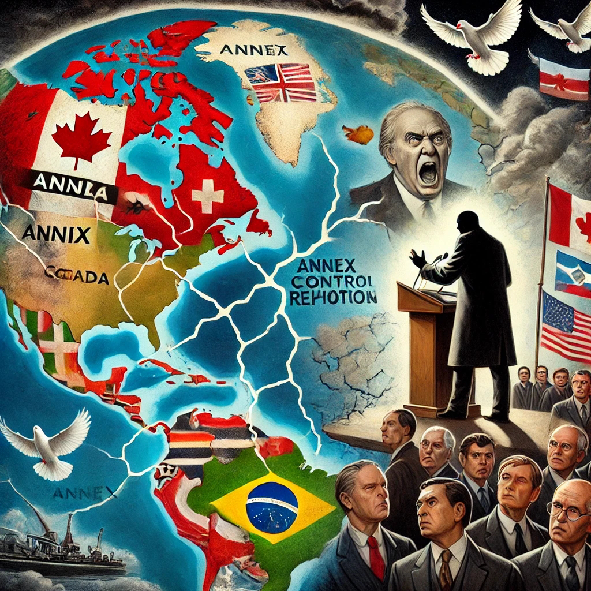

2025-02-10 15:35:51

Trump's expansionist language should raise concern, even if it seems rhetorical rather than a direct policy plan. Such rhetoric can have significant implications for global stability, diplomacy, and the international order. Here's why it matters:
1. Erosion of International Norms
The modern international system is built on principles like national sovereignty, territorial integrity, and peaceful cooperation, formalized in the UN Charter. Expansionist rhetoric, even when not acted upon, can undermine these norms by signaling that powerful nations can challenge borders and national identities.
2. Straining Alliances and Diplomatic Tensions
Trump's remarks about annexing Canada and acquiring Greenland could strain relations with key allies:
Canada is a NATO member and shares deep economic and defense ties with the U.S.
Denmark, which oversees Greenland, is also a NATO ally.
Such rhetoric risks undermining alliances crucial for global security, especially in a time of rising tensions with powers like Russia and China.
3. Encouraging Authoritarian Behavior
When a global superpower leader uses expansionist language without accountability, it could embolden authoritarian regimes. Russia’s annexation of Crimea and China’s ambitions in the South China Sea show how expansionist ideas can translate into real territorial aggression. Trump's language might inadvertently signal that such behavior can be normalized.
4. Destabilizing Global Markets and Security
Uncertainty caused by expansionist rhetoric can disrupt global markets and raise concerns about future conflicts. Investors and diplomats may interpret such statements as signals of instability, affecting trade relations and defense strategies.
5. Historical Lessons
History has shown how dangerous expansionist rhetoric can become when unchecked. Events like Nazi Germany's territorial ambitions began with rhetoric before escalating into full-scale conflicts.
Conclusion:
While Trump's statements may currently lack concrete policy backing, they shouldn't be dismissed lightly. Words from influential global leaders shape international perceptions and can gradually shift diplomatic boundaries. Maintaining vigilance and reinforcing diplomatic norms is essential to avoid the normalization of expansionist ideas.
Francisco Gonçalves/ ChatGPT (c) 2025
Image: courtesy of ChatGPT 2025